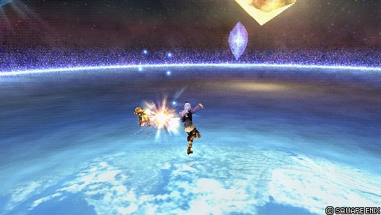

![Portrait officiel de Prishe dans Dissidia 012 [duodecim]](../assets/portraits/prishe.png)
Final Fantasy XI
Prishe
Combattante rapide au corps à corps : hit and run sûr et guerre d'usure
Position dans la méta
Tier S 2ᵉ sur 30 — tier list tournoi 2017 de dissidia.wiki (moitié valeurs de matchups, moitié avis de joueurs experts).
L'overview confirme qu'elle est fréquemment considérée comme l'un des personnages les plus forts, avec une stratégie constante et facile à exécuter.
Vue d'ensemble
Prishe est une combattante rapide de courte portée dotée d'une variété de braveries melee qui s'enchaînent les unes dans les autres. Quand certaines braveries sont équipées ensemble, elles déclenchent une réaction « Skillchain » qui inflige des dégâts de bravery supplémentaires.
Prishe est connue pour son jeu défensif à faible risque au corps à corps. Raging Fists et One-Inch Punch s'y distinguent : startup rapide, recovery courte et bonne récompense sur hit. Menacez l'adversaire avec des frappes avançantes retardables, chargez One-Inch Punch pour écraser les blocks et esquivez s'ils manquent. Ses air dodges sont difficiles à punir grâce à sa vitesse de chute élevée, et sa vitesse de dash figure parmi les plus rapides du jeu, ce qui l'aide à poursuivre les adversaires et les EX Cores. Rapide, sûre et difficile à toucher, Prishe est l'exemple type du « hit and run » efficace dans Dissidia 012 : la patience est largement récompensée, car elle excelle dans la guerre d'usure.
Ses faiblesses sont plus nuancées. Ses braveries, difficiles à punir, ne peuvent pas être cancel en block ni en d'autres attaques, ce qui plafonne ses mind games défensifs — pourtant déjà efficaces. La plupart de ses attaques ont un tracking vertical médiocre et souffrent contre les longs disjoints actifs (Thunder Crest de The Emperor, Godspeed de Sephiroth). Ses 1-hit HP sont situationnelles dans les situations d'échec et mat en EX Revenge, et elle subit un dilemme de slots de bravery similaire à celui de Vaan, vu l'abondance de chaînes de combos viables.
En jeu compétitif, Prishe a fréquemment été classée parmi les personnages les plus forts du jeu. Sa stratégie est constante et relativement simple à exécuter dans la plupart des matchups, ce qui en fait un choix notable pour les blind picks. Elle offre un jeu stable aux compétiteurs, même quand elle n'a pas un avantage net.
Forces
- Mobilité : vitesse de dash très élevée, forte en offense comme dans les courses aux EX Cores ; chute rapide après air dodge, donc esquives bien plus sûres que la moyenne.
- Turtling : braveries rapides à recovery courte et fort potentiel de mixup grâce au One Inch Punch chargé de haute priorité ; elle combat avec très peu de risque et devient difficile à toucher.
- Sûre et fiable : sa défense et sa synergie avec l'assist Aerith lui permettent de jouer le long terme, en accumulant jauge EX et bravery.
- Gros dégâts de bravery : malgré une base ATK faible, One Inch Punch chargé et les combos en EX Mode font très mal, surtout après un guard break.
Faiblesses
- HP attacks médiocres : comparées à ses braveries, elles ont un tracking et une couverture pauvres.
- Base DEF faible : quand Prishe se fait toucher, cela fait très mal.
- Dilemme des trois slots : ses loadouts compétitifs sont forts mais ne peuvent pas tout couvrir.
- Échecs et mat en EX Revenge : ses 1-hit HP sont situationnelles au mieux (Nullifying Dropkick au sol, Banishga à portée maximale en l'air) ; elle s'en remet au déplacement et à l'assist.
- Dépendance aux dodge cancels : surtout sensible à haut niveau, cela limite son potentiel maximal de mixup et punit les whiffs incessants dans les courses aux EX Cores.
Stats & vitesses
| Nom | Prishe (プリッシュ) |
|---|---|
| Jeu d'origine | Final Fantasy XI |
| ATK de base (LV100) | 109 (Low) |
| DEF de base (LV100) | 110 (Low) |
| Vitesse de course | 5 (Normal, Above Average), 2 (EX Mode, Fast) |
| Vitesse de dash | 73 (Normal, Fast), 69 (EX Mode, Very Fast) |
| Vitesse de chute | 75 (Normal, Above Average), 71 (EX Mode, Fast) |
| Chute après esquive | 21 (Normal, Very Fast), 14 (EX Mode, Very Fast) |
| BRV la plus rapide | 11F (Combo One) |
| HP la plus rapide | 43F (Asuran Fists, Auroral Uppercut) |
| HP en 1 coup | Yes (Nullifying Dropkick, Banishga max range) |
| HP links | No |
| Command block | No |
| Armes | Thrown Weapons, Grappling Weapons, Instruments, Poles, Parrying Weapons |
| Armures | Bangles, Gauntlets, Hats, Hairpins, Headbands, Clothing, Light Armor, Chestplates |
| Armes exclusives | Koenigs Knuckles, Spharai, Glanzfaust |
| Camp | Cosmos |
| Doubleur (JP) | Aya Hirano |
| Doubleur (ENG) | Julie Nathanson |
Point or : ce personnage · petits points : le reste du cast · trait violet : moyenne. Valeurs du wiki, plus bas = plus rapide ; le rang à droite se lit directement (1ᵉʳ = le plus rapide).
Coups
Barre plus courte = coup plus rapide. Startup en frames (60 i/s, données dissidia.wiki), priorité indiquée après la valeur. Les coups marqués ★ sont les plus rapides du kit — ce sont en général vos meilleurs outils de punish et de pression.
Braveries
Au sol
Combo (One) Melee Low

Combo rapide de trois coups de poing, la bravery la plus rapide de Prishe (11 frames). Peut s'enchaîner dans une autre bravery et combote même sans toucher. Si la chaîne démarre par Combo, le finisher rapporte environ 10 % d'EX Force en plus.
| Dégâts de base | 2, 2, 4 (8) |
|---|---|
| Startup | 11F |
| Type | Physical |
| Priorité | Melee Low |
| EX Force | 39 (One) |
| CP (maîtrisé) | 20 (10) |
Howling Fist (One) Melee Low
Charge aux poings à mi-distance, chaînable dans une autre bravery. Chargée, elle passe de Melee Low à Melee Mid et double les dégâts.
| Normal | Charged | |
|---|---|---|
| Dégâts de base | 10 (1 x 3, 7) | 20 (1 x 13, 7) |
| Startup | 17F | 32F (charge), 2F (release) |
| Type | Physical | Physical |
| Priorité | Melee Low | Melee Mid |
| EX Force | 15 | 15 |
| Cancels | Dodge | Dodge |
| CP (maîtrisé) | 20 (10) |
Dragon Kick (One) Melee Low
Balayage de jambe à mi-distance ; charger ajoute un hit supplémentaire (projectile Ranged Mid) et porte les dégâts de 15 à 25.
| Normal | Charged | |
|---|---|---|
| Dégâts de base | 15 | 25 (15, 10) |
| Startup | 17F | 26F (charge), 10F (release) |
| Type | Physical | Physical |
| Priorité | Melee Low | Melee Low (kick), Ranged Mid (projectile) |
| EX Force | 15 | 15 |
| Cancels | Dodge | Dodge |
| CP (maîtrisé) | 20 (10) |
Shoulder Tackle (One) Melee Low
Backflip puis charge sur l'adversaire, avec esquive de l'attaque adverse au démarrage (effet Dodge). Startup lent (45 frames).
| Dégâts de base | 12 |
|---|---|
| Startup | 45F |
| Type | Physical |
| Priorité | Melee Low |
| EX Force | 15 (One) |
| Effets | Dodge |
| CP (maîtrisé) | 20 (10) |
Banish Ranged Low
Projectile Ranged Low au sol : perles de lumière à haute vélocité tirées à longue portée. Ne déclenche pas de Skillchain.
| Dégâts de base | 10 |
|---|---|
| Startup | 31F |
| Type | Magical |
| Priorité | Ranged Low |
| EX Force | 15 |
| CP (maîtrisé) | 30 (15) |
En l’air
Backhand Blow (One) Melee High
Revers descendant Melee High (29 frames), utile pour attaquer depuis le dessus.
| Dégâts de base | 18 |
|---|---|
| Startup | 29F |
| Type | Physical |
| Priorité | Melee High |
| EX Force | 15 (One) |
| CP (maîtrisé) | 20 (10) |
Spinning Attack (One) Melee Low
Ruée ascendante aux poings avec effet Absorb, idéale pour attaquer depuis le dessous.
| Dégâts de base | 1 x 4, 11 (15) |
|---|---|
| Startup | 23F |
| Type | Physical |
| Priorité | Melee Low |
| EX Force | 15 (One) |
| Effets | Absorb |
| CP (maîtrisé) | 20 (10) |
Raging Fists (One) Melee Low
Combo de cinq coups de poing en 13 frames qui combote même sans toucher : l'un des piliers de son jeu défensif rapproché (startup rapide, recovery courte, bonne récompense sur hit).
| Dégâts de base | 2 x 4, 7 (15) |
|---|---|
| Startup | 13F |
| Type | Physical |
| Priorité | Melee Low |
| EX Force | 15 (One) |
| CP (maîtrisé) | 20 (10) |
One Inch Punch (One) Melee Low
Éclats d'énergie martelés au corps à corps, 13 frames en version normale. Chargée, elle devient Melee High à 35 de dégâts : c'est l'outil qui écrase les blocks et porte son potentiel de mixup.
| Normal | Charged | |
|---|---|---|
| Dégâts de base | 7 (2, 1 x 3, 2) | 35 (2 x 14, 7) |
| Startup | 13F | 32F (charge), 4F (release) |
| Type | Physical | Physical |
| Priorité | Melee Low | Melee High |
| EX Force | 15 | 15 |
| Cancels | Dodge | Dodge |
| CP (maîtrisé) | 20 (10) |
Holy Ranged Low
Projectile aérien Ranged Low à longue portée : perles de lumière lentes mais à fort homing. Ne déclenche pas de Skillchain.
| Dégâts de base | 10 |
|---|---|
| Startup | 19F |
| Type | Magical |
| Priorité | Ranged Low |
| EX Force | 15 |
| CP (maîtrisé) | 30 (15) |
Followups
Attack data is mostly shared with (One) versions, but (Two) followups generate a different amount of EX and can also wall rush or initiate chase. These braveries also cost less CP to equip.
Ces followups se greffent sur les braveries « (One) » — le diagramme des chaînes ci-dessous résume les embranchements.
Combo (Two) Melee Low
Version follow-up de Combo : mêmes données d'attaque, mais 75 d'EX Force (le meilleur rendement EX de ses follow-ups) et effet Chase, pour 10 CP seulement.
| Dégâts de base | 2, 2, 4 (8) |
|---|---|
| Startup | 11F |
| Type | Physical |
| Priorité | Melee Low |
| EX Force | 75 (Two) |
| Effets | Chase |
| CP (maîtrisé) | 10 (5) |
Howling Fists (Two) Melee Low
Follow-up de chaîne : 60 d'EX et Chase en version normale, Wall Rush en version chargée. Utilisée comme finisher, la charge requise est considérablement plus courte.
| Normal | Charged | |
|---|---|---|
| Dégâts de base | 10 (1 x 3, 7) | 20 (1 x 13, 7) |
| Startup | 17F | 32F (charge), 2F (release) |
| Type | Physical | Physical |
| Priorité | Melee Low | Melee Mid |
| EX Force | 60 | 0 |
| Effets | Chase | Wall Rush |
| Cancels | Dodge | Dodge |
| CP (maîtrisé) | 10 (5) |
Dragon Kick (Two) Melee Low
Follow-up avec Chase dans les deux versions, 60 d'EX en normale et 75 en chargée.
| Normal | Charged | |
|---|---|---|
| Dégâts de base | 15 | 25 (15, 10) |
| Startup | 17F | 26F (charge), 10F (release) |
| Type | Physical | Physical |
| Priorité | Melee Low | Melee Low (kick), Ranged Mid (projectile) |
| EX Force | 60 | 75 |
| Effets | Chase | Chase |
| Cancels | Dodge | Dodge |
| CP (maîtrisé) | 10 (5) |
Shoulder Tackle (Two) Melee Low
Follow-up en body slam avec Wall Rush, sans EX Force.
| Dégâts de base | 12 |
|---|---|
| Startup | 45F |
| Type | Physical |
| Priorité | Melee Low |
| EX Force | 0 (Two) |
| Effets | Wall Rush |
| CP (maîtrisé) | 10 (5) |
Backhand Blow (Two) Melee High
Follow-up en revers Melee High avec Wall Rush : d'après la section Skillchain, ses finishers sont excellents pour poser des combos avec l'assist Kuja.
| Dégâts de base | 18 |
|---|---|
| Startup | 29F |
| Type | Physical |
| Priorité | Melee High |
| EX Force | 0 (Two) |
| Effets | Wall Rush |
| CP (maîtrisé) | 10 (5) |
Spinning Attack (Two) Melee Low
Follow-up en ruée ascendante avec Wall Rush, sans EX Force.
| Dégâts de base | 1 x 4, 11 (15) |
|---|---|
| Startup | 23F |
| Type | Physical |
| Priorité | Melee Low |
| EX Force | 0 (Two) |
| Effets | Wall Rush |
| CP (maîtrisé) | 10 (5) |
Raging Fists (Two) Melee Low
Follow-up du combo de cinq coups avec Chase et 72 d'EX Force.
| Dégâts de base | 2 x 4, 7 (15) |
|---|---|
| Startup | 13F |
| Type | Physical |
| Priorité | Melee Low |
| EX Force | 72 (Two) |
| Effets | Chase |
| CP (maîtrisé) | 10 (5) |
One Inch Punch (Two) Melee Low
Follow-up avec Wall Rush dans les deux versions (aucune EX Force). En finisher, la charge requise est considérablement plus courte ; le timing exact n'est pas documenté.
| Normal | Charged | |
|---|---|---|
| Dégâts de base | 7 (2, 1 x 3, 2) | 35 (2 x 14, 7) |
| Startup | 13F | 32F (charge), 4F (release) |
| Type | Physical | Physical |
| Priorité | Melee Low | Melee High |
| EX Force | 0 | 0 |
| Effets | Wall Rush | Wall Rush |
| Cancels | Dodge | Dodge |
| CP (maîtrisé) | 10 (5) |
Chaque bravery « (One) » (à gauche) peut enchaîner sur n'importe quel followup « (Two) » équipé (à droite) — le followup est choisi à l'équipement, pas pendant le combo. Détail de chaque coup dans les accordéons ci-dessus.
Attaques HP
Au sol
Asuran Fists Melee High
HP attack au corps à corps Melee High (43 frames, à égalité la plus rapide de ses HP attacks) avec Wall Rush : charge brève puis martèlement, efficace à toute hauteur.
| Dégâts de base | 3 x 7 (21) |
|---|---|
| Startup | 43F |
| Type | Physical |
| Priorité | Melee High |
| EX Force | 15 |
| Effets | Wall Rush |
| CP (maîtrisé) | 30 (15) |
Nullifying Dropkick Melee High
Dropkick chargé Melee High à mi-distance avec Wall Rush : démarrage lent (49 frames) mais bonne portée. C'est sa 1-hit HP au sol, citée comme situationnelle pour résoudre les checkmates en EX Revenge.
| Startup | 49F |
|---|---|
| Priorité | Melee High |
| EX Force | 0 |
| Effets | Wall Rush |
| CP (maîtrisé) | 40 (20) |
En l’air
Auroral Uppercut Melee High
Uppercut rapide Melee High (43 frames) avec Wall Rush, excellent pour attaquer depuis le dessous.
| Dégâts de base | 2 x 5 (10) |
|---|---|
| Startup | 43F |
| Type | Physical |
| Priorité | Melee High |
| EX Force | 15 |
| Effets | Wall Rush |
| CP (maîtrisé) | 30 (15) |
Banishga Ranged High
Onde de choc de lumière Ranged High (47 frames) avec Wall Rush, efficace horizontalement. À portée maximale, elle sert de 1-hit HP en l'air, là aussi situationnelle.
| Dégâts de base | 2 x 5 (10) |
|---|---|
| Startup | 47F |
| Type | Physical |
| Priorité | Ranged High |
| EX Force | 0 |
| Effets | Wall Rush |
| CP (maîtrisé) | 40 (20) |
EX Mode: Two-Hour Ability! & EX Burst
L'EX Mode « Two-Hour Ability! » confère Regen, Critical Boost et Hundred Fists : tant que l'EX Mode est actif, Prishe peut chaîner jusqu'à trois weapon skills et sa vitesse de déplacement augmente. Ses statistiques de mobilité passent d'ailleurs toutes un cran au-dessus en EX Mode (run, dash, chute et chute après esquive).
EX Burst : « The Five Lights » : Prishe lance un éclat de Magicite, puis il faut entrer les commandes affichées dans le sens horaire pour augmenter le nombre de coups portés.
Mécanique unique
Quand certaines braveries sont enchaînées, Prishe active une Skillchain : une explosion d'énergie qui inflige des dégâts de bravery additionnels (multiplicateur 5, physique, sans EX Force), déclenchée en parallèle de l'attaque en cours. Son nom s'affiche en haut de l'écran, comme les HP attacks et les activations d'EX Mode.
Les Skillchains ne s'activent qu'avec des chaînes de braveries physiques : Banish, Holy et les HP attacks n'en déclenchent jamais.
- Huit Skillchains sont répertoriées avec leurs couples starter/finisher : Compression (Howling Fist > One Inch Punch), Detonation (Combo, Howling Fist, One Inch Punch, Raging Fists, Shoulder Tackle ou Spinning Attack > Backhand Blow), Fusion (Spinning Attack > Combo, Howling Fist, Raging Fists, Shoulder Tackle ou Spinning Attack), Gravitation (Backhand Blow > One Inch Punch), Impaction (Shoulder Tackle > Combo, Howling Fist, Raging Fists, Shoulder Tackle ou Spinning Attack), Liquefaction (Combo, Howling Fist ou Raging Fists > Spinning Attack), Reverberation (Howling Fist > Shoulder Tackle) et Transfixion (One Inch Punch > Howling Fist).
- Detonation est l'une des plus pratiques : les finishers Backhand Blow posent très bien les combos avec l'assist Kuja et la Skillchain part de ses starters les plus courants. Le finisher Howling Fist offre plus de flexibilité pour monter des combos assist aériens (Chase ou Wall Rush), au prix de dégâts de bravery ou d'EX Force selon le niveau de charge.
- Les Skillchains restent souvent le troisième meilleur choix de follow-up : bonnes sur certains sets axés dégâts de bravery, mais sinon surclassées en récompense ou en utilité par ses autres follow-ups. Prishe ne peut assigner qu'une chaîne de bravery par slot, ce qui restreint leur viabilité globale. En revanche, le timing d'input pour connecter les attaques chargées y est plus permissif — non pas grâce au système lui-même, mais par la synergie (frame data et hit stun) entre les braveries d'une chaîne.
Un Skillchain se déclenche en enchaînant un coup de la colonne de gauche (starter) sur un coup de la colonne de droite (finisher) — quand plusieurs pilules sont listées, n'importe laquelle convient.
| Damage multiplier | Type | EX Force |
|---|---|---|
| 5 | Physical | 0 |
Plan de jeu & techniques avancées
La boucle de jeu de Prishe est un hit and run défensif au corps à corps : menacer avec des frappes avançantes retardables (Raging Fists, One Inch Punch en 13 frames), charger One Inch Punch pour écraser les blocks, et se retirer d'une esquive quasi impunissable si l'adversaire ne mord pas. Sa vitesse de dash parmi les plus élevées du jeu lui permet de poursuivre les fuyards et de gagner les courses aux EX Cores. La patience paie : elle est taillée pour la guerre d'usure, en empilant jauge EX et bravery grâce à sa défense et à sa synergie avec l'assist Aerith.
Ses braveries s'enchaînent : les versions (One) démarrent la chaîne, les follow-ups (Two) décident de la suite — Chase et gros gains d'EX (Combo, Raging Fists, Dragon Kick) ou Wall Rush pour poser l'assist (Backhand Blow, One Inch Punch, Spinning Attack, Shoulder Tackle). Les finishers Backhand Blow préparent particulièrement bien les combos avec l'assist Kuja, et les Skillchains ajoutent des dégâts bonus sur certains sets. Attention au dilemme des slots : une seule chaîne par slot de bravery, donc pas de couverture complète.
Ses HP attacks au tracking médiocre restent le maillon faible : Asuran Fists et Auroral Uppercut sont ses plus rapides (43 frames, Wall Rush), Nullifying Dropkick et Banishga à portée maximale servent de 1-hit HP situationnelles pour les checkmates en EX Revenge — sinon, déplacement et assist font le travail. En EX Mode, Hundred Fists permet de chaîner jusqu'à trois weapon skills et accélère encore sa mobilité, et les combos EX Mode infligent de gros dégâts de bravery, surtout après un guard break.
Techniques spécifiques
One Inch Punch chargé en finisher universel
Quelle que soit la situation (EX Mode, Skillchain ou non), One Inch Punch chargé reste son attaque la plus puissante : les joueurs d'époque conseillaient de terminer un maximum de chaînes dessus, en équilibrant les slots entre finishers One Inch Punch (dégâts, Wall Rush) et Dragon Kick (EX Force).
Sources : gamefaqs.gamespot.com/boards/605802-dissidia-012-duodecim-fi
Combo > Dragon Kick chargé, la chaîne à EX
Toute chaîne démarrée par Combo rapporte environ 10 % d'EX Force en plus, et Dragon Kick chargé est son plus gros générateur d'EX en finisher : la chaîne Combo > Dragon Kick chargé culmine autour de 125 d'EX Force avec Chase — le meilleur rendement EX du personnage, sans aucune Skillchain.
Sources : gamefaqs.gamespot.com/boards/605802-dissidia-012-duodecim-fi
Double Skillchain en EX Mode
Hundred Fists autorise trois weapon skills à la suite : en gardant Spinning Attack en finisher d'un slot, une chaîne devient starter > Spinning Attack (Skillchain) > Spinning Attack (seconde Skillchain) — deux explosions bonus sur un seul engagement.
Sources : gamefaqs.gamespot.com/boards/605802-dissidia-012-duodecim-fi
Hitbox de Spinning Attack en starter aérien
Sa hitbox atypique de ruée ascendante attrape les adversaires pris assez bas, jusque derrière leur garde — un angle d'ouverture peu commun contre un adversaire qui bloque.
Sources : gamefaqs.gamespot.com/boards/605802-dissidia-012-duodecim-fi
Dragon Kick, l'exception hors Skillchain
Dragon Kick ne déclenche aucune Skillchain, ni en starter ni en finisher, mais chargé c'est son attaque au sol la plus forte. Sur l'enchaînement Dragon Kick chargé > One Inch Punch chargé, les sources d'époque divergent : donné comme son combo au sol le plus puissant à égalité par un joueur, jugé quasi inliable (timing extrême) par un autre.
Sources : gamefaqs.gamespot.com/boards/605802-dissidia-012-duodecim-fi
Techniques universelles (blodge, dash feint, lock off, dodge punishment) : voir la page Techniques & glitches.
Matchups
La page matchups du wiki est un stub, mais l'overview donne des repères : la stratégie de Prishe est constante et relativement simple à exécuter dans la plupart des matchups, ce qui en fait un choix notable en blind pick — elle reste solide même sans avantage net. Ses points de friction documentés : les longs disjoints actifs comme le Thunder Crest de The Emperor ou le Godspeed de Sephiroth, contre lesquels ses attaques au tracking vertical médiocre souffrent.
Vidéos de matchs : Replay Theater — matchs de Prishe.
Builds
Ses builds se concentrent habituellement sur l'EX et les dégâts de bravery. Le build documenté (« Adamant Chains ») mise sur l'effet spécial Adamant Chains — dégâts, absorption d'EX et air dodges encore plus sûrs — avec l'assist Aerith, l'arme Cleaver, le set Adamant (Shield, Helm, Vest) et des accessoires orientés boosters (Hyper Ring, Muscle Belt, Dismay Shock, Battle Hammer, Summon Unused, trois White Drop, White Gem, Glutton), Rubicante en summon. Il s'appuie sur l'Equip Glitch (le coût total en CP le suppose réalisé).
Side by Side est déconseillé sur Prishe à cause de ses HP attacks moyennes et de son absence de combo solo vers une HP attack.
| Stats | |
|---|---|
| HP | 9972 |
| CP | 450 |
| BRV | 917 |
| ATK | 178 |
| DEF | 183 |
| LUK | 60 |
| Max Booster | x1.3 |
| Equipment | |
|---|---|
| Assist | Aerith |
| Weapon | Cleaver |
| Hand | Adamant Shield |
| Head | Adamant Helm |
| Body | Adamant Vest |
| Accessory 1 | Hyper Ring |
| Accessory 2 | Muscle Belt |
| Accessory 3 | Dismay Shock |
| Accessory 4 | Battle Hammer |
| Accessory 5 | Summon Unused |
| Accessory 6 | White Drop |
| Accessory 7 | White Drop |
| Accessory 8 | White Drop |
| Accessory 9 | White Gem |
| Accessory 10 | Glutton |
| Summon | Rubicante |
| Bravery attacks | |
|---|---|
| Ground | Aerial |
| HP attacks | |
| Ground | Aerial |
| Bravery attacks | |
|---|---|
| Ground | Aerial |
| HP attacks | |
| Ground | Aerial |
Les emplacements de braveries et de HP attacks du build ne sont pas renseignés dans les données, et le second build (« Build #2 ») est un gabarit vide.
Synergies d'assist
Prishe en tant qu'assist
En tant qu'assist, Prishe est classée dans le tier Low de la tier list assist de Muggshotter. Les sources de sa page ne détaillent pas son usage en assist au-delà de ce classement.
Assists recommandées
- Aerith — Sa synergie avec Aerith est citée dans ses forces : défense et assist Aerith lui permettent de jouer le long terme en accumulant jauge EX et bravery. C'est aussi l'assist du build Adamant Chains documenté.
- Kuja — Citée par la page parmi les assists qui fonctionnent bien avec elle ; la section Skillchain précise que les finishers Backhand Blow posent très bien les combos avec l'assist Kuja.
Tech communautaire
Dissidia Duodecim: The Essential Guide to Learning Prishe 2011
La vidéo-guide d'époque de référence pour apprendre Prishe (chaîne glenburg89, mars 2011) : propriétés des attaques et fondamentaux du personnage, toujours en ligne.
Sources
- https://dissidia.wiki/Prishe_(Dissidia_012)
- https://www.youtube.com/watch?v=pbXhyagrfqE
- https://gamefaqs.gamespot.com/boards/605802-dissidia-012-duodecim-final-fantasy/58732928
- https://dissidia.wiki/Tier_List_(Dissidia_012)
- https://dissidia.wiki/Tier_List_(Assist)
Limites connues
- La page matchups du wiki est un stub : aucune analyse détaillée par personnage (seuls les exemples cités dans l'overview ont pu être repris).
- Aucune section combos renseignée (sous-section Solo vide) : pas de routes de combo détaillées au-delà des mentions de l'overview et de la section Skillchain.
- Le timing exact de la charge raccourcie de One Inch Punch (Two) en finisher est explicitement non documenté dans les sources.
- Le wiki ne nomme aucune technique avancée en dehors des Skillchains (traitées dans uniqueMechanics) : les entrées advancedTech proviennent d'un thread GameFAQs d'époque (2011), avec un point de désaccord signalé (liaison Dragon Kick chargé > One Inch Punch chargé).
- Le second build (« Build #2 ») est un gabarit vide et les slots d'attaques du build principal ne sont pas renseignés.
- Valeurs d'assist gain absentes des tableaux de coups ; section References vide : communityTech laissé vide.